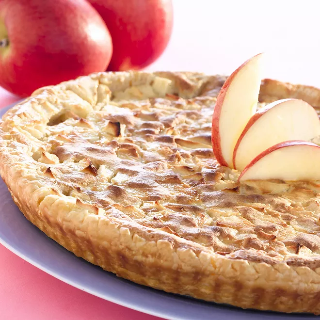

tarte aux pommes

Ingredients 8 personnes
pommes
beurre
sucre vanille
rouleau de pâte feuilletée
cassonade
Étapes
Couper les pommes en tranche et disposer sur la pâte
rajouter le beurre et le sucre vanille
enfourner pendant 15 à 20 minutes